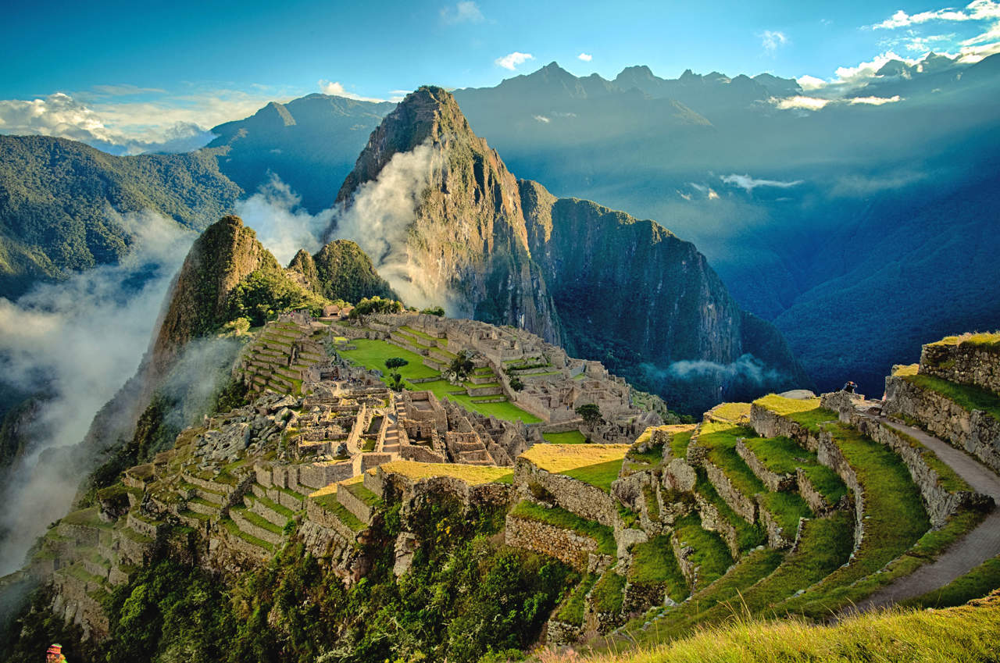
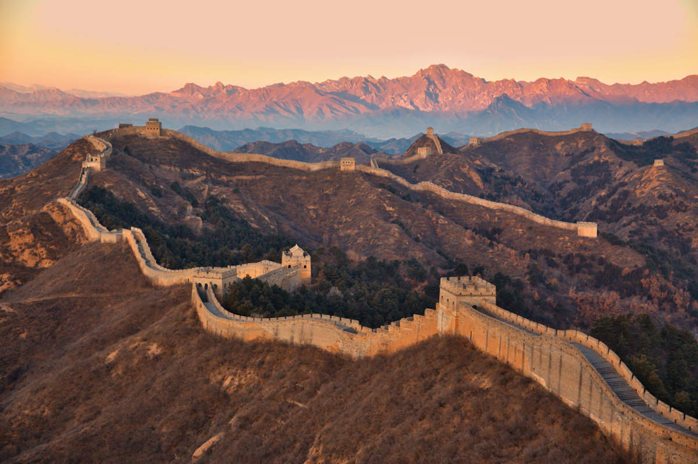
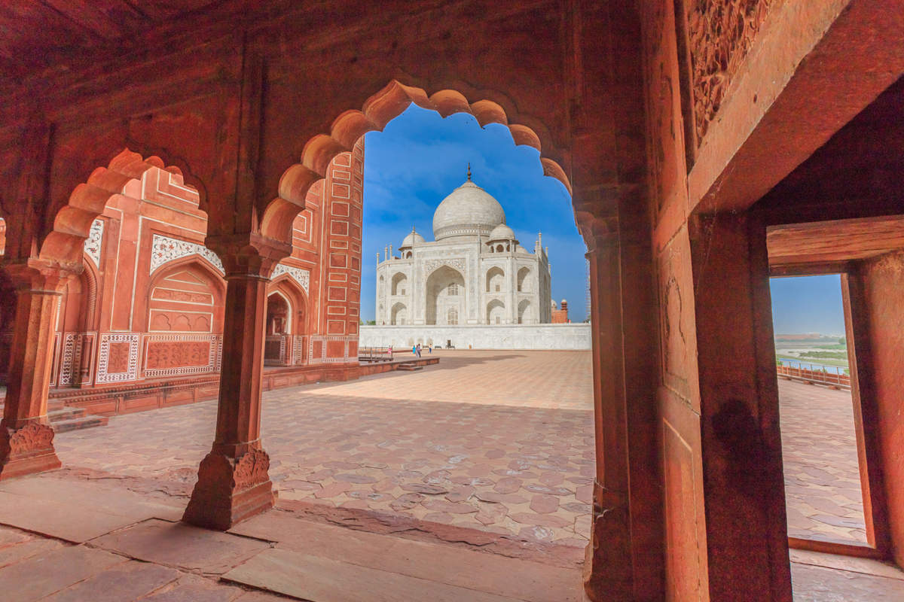
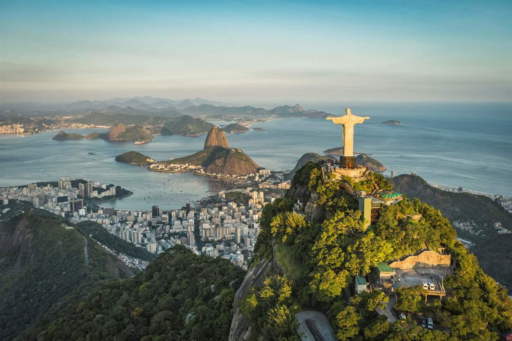
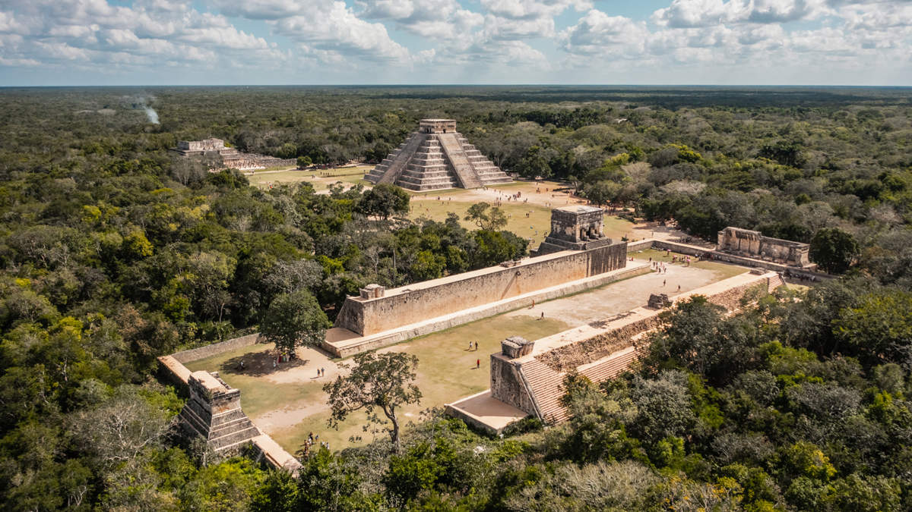
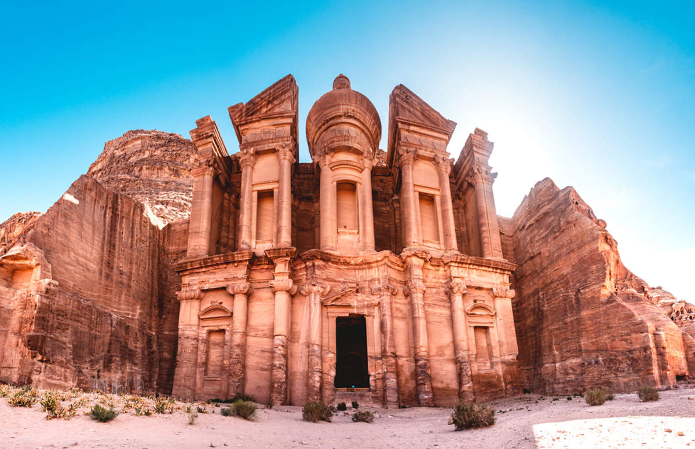

En el año 2007, la New Open World Corporation anunció las Siete Maravillas del Mundo Moderno, un reconocimiento a obras arquitectónicas y monumentos que destacan por su esplendor y significado histórico. A diferencia de las maravillas antiguas, estas maravillas encarnan el ingenio contemporáneo y la grandiosidad de la humanidad en el Siglo XXI.